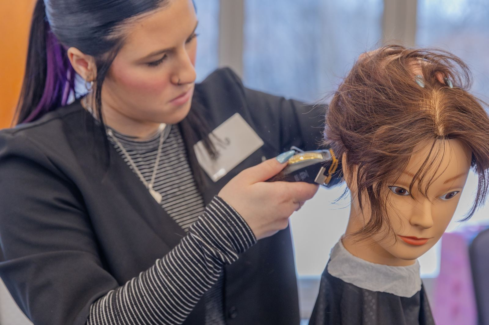

Event details
Save the date: Sunday, March 14, 2027 at the Don Umerley Civic Center in Rocky River. Everything competitors, instructors and spectators need to know — join the list for nomination details. Download the printable flyer.
How it works
Competitors work on mannequins through two timed rounds of about 40 minutes each — Round 1: a shear cut and style, then Round 2: a fade of the competitor’s choice. Judges score each round as soon as the clock stops.
The highest combined scores take 1st, 2nd and 3rd place, and winners are announced and presented with their checks at the end of the afternoon.
Students submit interest
Students let us know they’re interested on this site — this is not an entry. Instructors sign up to receive the nomination form.
Instructors nominate
All competitors must be nominated by their cosmetology school instructor — students can’t enter themselves. Each program may nominate up to two students.
Confirm & sign the release
Nominees complete the Affidavit of Eligibility & Release (parent/guardian signs if under 18).
Compete on event day
Check in, set up your station and cut against the clock — two rounds, about 40 minutes each.
Awards
Top three win professional tools or tuition money — plus matching gifts for their schools.

Event-day schedule
Based on the 2026 run of show — the 2027 schedule is sent to confirmed competitors.
- 12:00 p.m.Competitor & educator check-in, swag bags, station setup
- 12:30 p.m.Competitor orientation
- 1:00 p.m.Welcome from the emcees
- 1:10 p.m.Round 1: shear cut & style (40 min), then judging
- 2:15 p.m.Round 2: fade of the competitor’s choice (40 min)
- 3:00 p.m.Final judging
- 3:20 p.m.Winners announced & prizes presented
$4,500 in prizes
Each winner’s prize goes toward their tuition or, if they don’t owe tuition, comes as a professional tool package of the same value to help start their career. Prizes are not paid in cash. Every student prize is matched by an equal gift to the winner’s school program — as a check or as tools for the classroom.
as a check or tools for the program
as a check or tools for the program
as a check or tools for the program
Eligibility
- Currently enrolled in a cosmetology program in Northeast Ohio — graduates are not eligible.
- Nominated by a cosmetology instructor at your school — students cannot nominate themselves.
- Signed Affidavit of Eligibility & Release — a parent or guardian also signs if you’re under 18.
Spectators & media
Family, friends, instructors and classmates are welcome to come cheer — the energy in the room is a big part of the day. No sign-up needed. Light refreshments are provided, and the emcees keep the crowd busy with trivia and giveaways.
The event is photographed and filmed, and local media including FOX 8 Cleveland have covered past competitions.
Your local Great Clips franchisees
Create the Cut is planned, staffed and funded by the independently owned and operated Great Clips salons of Cleveland-Akron-Canton — not by Great Clips corporate. Franchisees Alex Harris, Clara Osterhage, Lorie Cathcart and Cathy Taggart and their salon teams make it happen every year.
“This is a growth opportunity for students. It’s also a chance for us to demonstrate to the next generation of stylists that Great Clips is not simply a large haircut chain, but a network of locally owned and operated businesses that invest in their communities, support local students, and hire local talent.” — Alex Harris
Explore Great Clips careersReady to show what you can do?
Students: let us know you’re interested. Instructors: sign up to receive the nomination form — all competitors are nominated by their cosmetology school instructors.